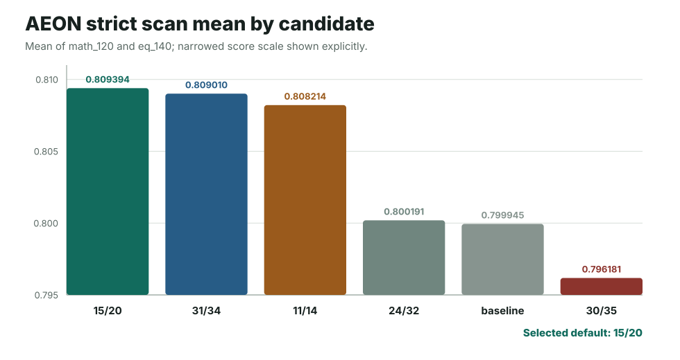
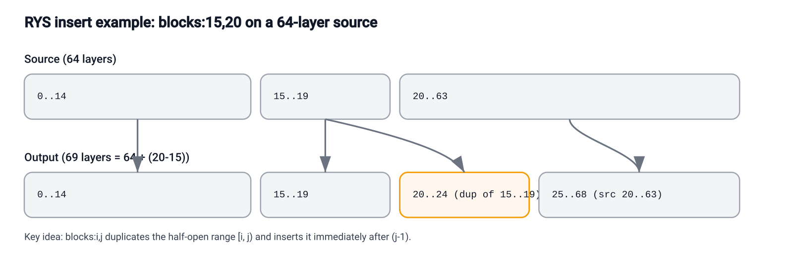
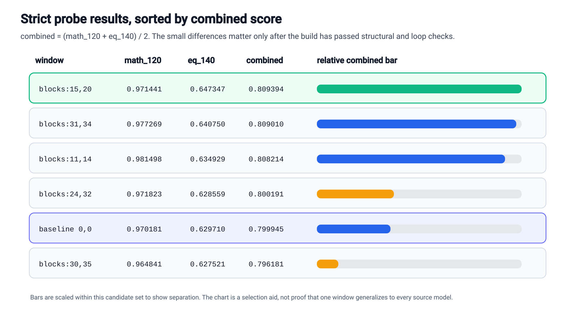
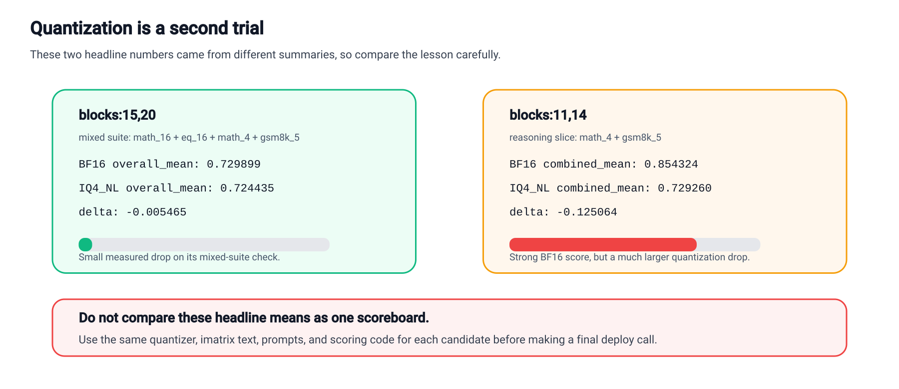
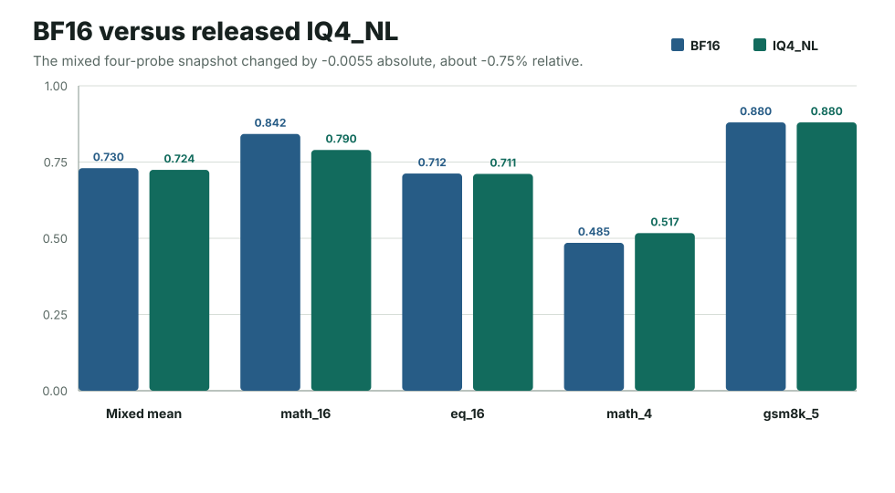
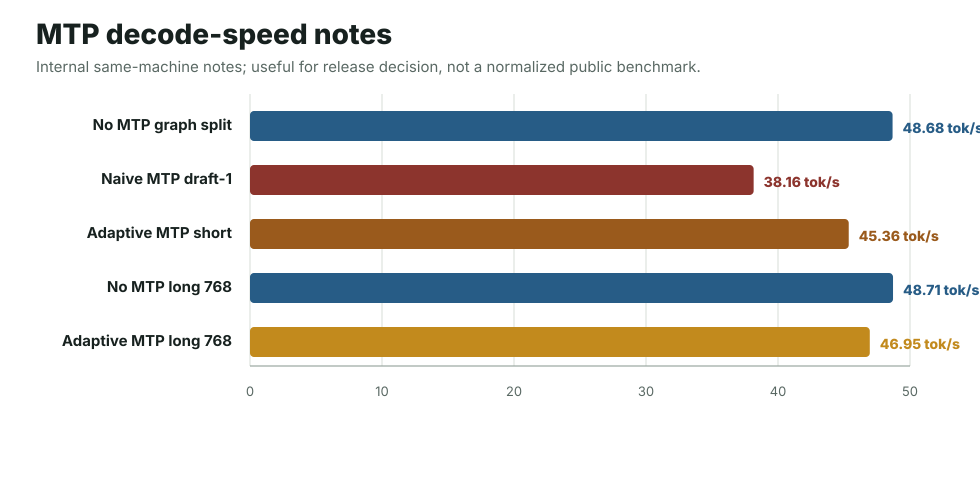
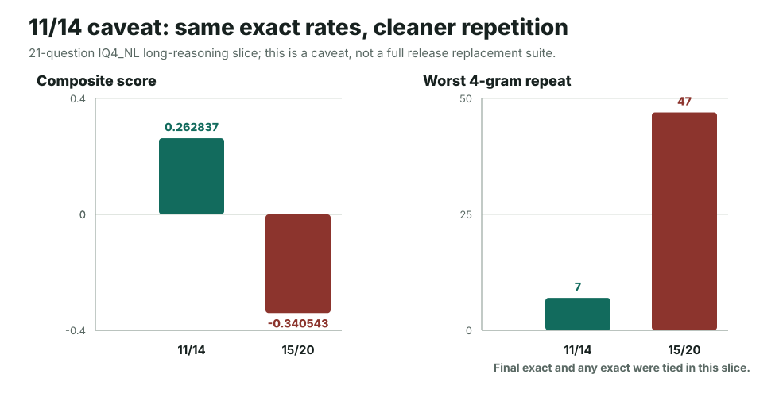

Contents
- What This Page Claims
- Released Artifacts
- Experiment Timeline
- Test Coverage Snapshot
- Complete Candidate Lists
- Source Model And RYS Build
- Layer-Window Selection
- Quantization Survival
- Runtime Profile
- MTP And Speed Work
- Rejected Or Non-Default Variants
- Practical Agent Tests
- Known Tradeoffs
- Evidence Ledger
What This Page Claims
This page is intentionally written as a record, not a leaderboard page. It explains why the release default became the non-MTP IQ4_NL GGUF and where the evidence is strong, weak, or mixed.
Claimed
On the mixed BF16-vs-IQ4_NL snapshot, this RYS 15/20 branch lost less than 1% relative mean score after compression to the released practical GGUF.
Claimed
The custom ik-llama fork is the intended runtime path. The model card and this page should not be read as stock llama.cpp compatibility claims.
Not Claimed
15/20 is not presented as universally best. A later 11/14 long-reasoning comparison was cleaner on repetition, and that remains an important caveat.
Released Artifacts
The public Hugging Face repo contains the practical inference file, an experimental MTP file, a BF16 GGUF reference, and the BF16 safetensors folder for continued work.
| File | Purpose | Size | Decision |
|---|---|---|---|
Qwen3.6-27B-AEON-RYS-MaxThinkCoder-IQ4_NL-ik-llama-custom-mixed.gguf |
Main non-finetuned inference artifact. | 16,554,834,080 bytes | Default release file. |
Qwen3.6-27B-AEON-RYS-MaxThinkCoder-SpeedBoosted-IQ4_NL-MTP-Experimental.gguf |
MTP-capable IQ4_NL artifact with MTP-tail imatrix coverage. | 16,794,473,728 bytes | Experimental; not the default. |
Qwen3.6-27B-AEON-RYS-MaxThinkCoder-BF16.gguf |
Source-quality GGUF reference for inspection, conversion, and comparison. | 57,597,296,608 bytes | Exploration artifact. |
bf16-safetensors/ |
HF-format checkpoint for Transformers, LoRA, SFT, continued training, or conversion work. | 11 shards | Training/workflow artifact. |
Decision
For normal users, the intended file is the non-MTP IQ4_NL GGUF. The BF16 files exist so people can inspect or continue the work; they are not the small-form deployment claim.
Experiment Timeline
The release moved through source selection, RYS construction, strict scanning, quantization screening, runtime work, and practical validation. Later fine-tune work built on this base, but is separate from the non-finetuned record here.
1. Source Branch
Use AEON-7/Qwen3.6-27B-AEON-Ultimate-Uncensored as the source branch instead of the earlier official-base line or other abliterated candidates.
2. RYS Build
Build safetensors-first RYS checkpoints with correct tensor remapping and per-layer metadata remapping for Qwen3.6 hybrid attention.
3. Strict Window Scan
Compare candidate RYS windows against AEON baseline on strict math and EQ validation files. Select 15/20 as the balanced winner.
4. Quantization Screen
Convert to GGUF, build imatrix calibration, quantize to IQ4_NL, and compare BF16 against the quantized release candidate.
5. Runtime Work
Patch and package the ik-llama fork for the custom mixed GGUF layout, Qwen3.6 hybrid handling, graph split, Jinja, and DeepSeek reasoning format.
6. Release Decision
Publish the non-MTP IQ4_NL as the default, keep MTP as experimental, keep BF16 as exploration/reference, and document known caveats.
Test Coverage Snapshot
This is the compact count of the evidence behind the release. The exact datasets and files are listed again in the evidence ledger.
| Stage | Coverage | What It Answered | Decision Impact |
|---|---|---|---|
| Early AEON short scan | 13 candidate mappings across math_16 and eq_16. | Which windows looked promising before the strict pass? | Exploratory only; not final selection basis. |
| AEON strict scan | 6 candidate mappings across math_120 and historical eq_140 files. | Which RYS window had the best balanced strict score? | Selected 15,20. |
| 15/20 BF16 vs IQ4_NL | Four mixed probes: math_16, eq_16, math_4, gsm8k_5; 41 prompt items total. | Did the release quant survive compression? | Confirmed IQ4_NL as the practical target. |
| 11/14 quant caveats | Reasoning slice plus no-think math/EQ quant comparison files. | Was 11/14 obviously better after quantization? | No; it was promising but volatile and not strict-balanced winner. |
| Long fair comparison | 2 IQ4_NL branches, 21 numeric questions, 2048-token reasoning budget. | Did 15/20 have repetition weaknesses against 11/14? | Yes; documented as a real caveat. |
| Mixed-Q8 probe | 2 quant variants, 9-item quick paired eval. | Would protecting the RYS window in Q8 improve the default? | No replacement. |
| MTP work | MTP-tail imatrix, 512/2048 quality checks, short and long speed matrices. | Should the MTP file become the default? | No; keep experimental. |
| Practical agent checks | 5-task production matrix plus 5-run canvas comparison set. | Could the compressed model act as a coding-agent base? | Yes with caveats; behavior reliability motivated later SignalLatch. |
Spreadsheet Source
The chart data is collected into an OnlyOffice workbook: qwen36_aeon_rys_stats.xlsx. It contains the short scan, strict scan, quantization snapshot, 11/14 long-reasoning comparison, MTP speed notes, and duplicate-window cost sheet.
Complete Candidate Lists
The first version of this page summarized the scan coverage and listed the decision rows, but did not spell out every tested mapping. This section is the explicit candidate appendix from the AEON scan files.
Single-Layer Note
The early short scan contains one true single-layer duplication candidate: blocks:20,21, which duplicates source layer 20 only. The file named aeon_single_blocks_15_20_math120.pkl is misleadingly named for this question: it contains one entry for the 15,20 block candidate, not a full single-layer sweep.
| Early short-scan candidate | math_16 | eq_16 | Mean | Read |
|---|---|---|---|---|
blocks:24,32 | 0.821109 | 0.714006 | 0.767558 | Best short-scan mean; not final strict winner. |
blocks:15,20 | 0.818587 | 0.712340 | 0.765463 | Strong short-scan candidate; later strict-balanced winner. |
blocks:11,14 | 0.802940 | 0.715609 | 0.759275 | Strong math/reasoning branch, later caveated. |
blocks:31,34 | 0.790785 | 0.713317 | 0.752051 | Close strict-scan runner-up later. |
blocks:30,35 | 0.800002 | 0.701506 | 0.750754 | Official-base winner did not transfer as AEON winner. |
blocks:0,0 | 0.794387 | 0.706506 | 0.750447 | AEON baseline. |
blocks:11,14;30,35 | 0.771005 | 0.709006 | 0.740006 | Two-window mesh; did not beat simpler candidates. |
blocks:15,27 | 0.756966 | 0.714423 | 0.735695 | Wider mid-window candidate. |
blocks:28,36 | 0.766733 | 0.700577 | 0.733655 | Late-window candidate. |
blocks:9,17 | 0.730846 | 0.723526 | 0.727186 | Good EQ, weaker math. |
blocks:30,34 | 0.713382 | 0.716506 | 0.714944 | Late-window candidate. |
blocks:8,17 | 0.664031 | 0.724776 | 0.694403 | High EQ but poor math balance. |
blocks:20,21 | 0.680363 | 0.703526 | 0.691944 | Only true single-layer duplication candidate in this short scan. |
| Strict-scan candidate | math_120 | eq_140 | Mean | Decision role |
|---|---|---|---|---|
blocks:15,20 | 0.971441 | 0.647347 | 0.809394 | Winner. |
blocks:31,34 | 0.977269 | 0.640750 | 0.809010 | Very close runner-up. |
blocks:11,14 | 0.981498 | 0.634929 | 0.808214 | Best strict math, not combined winner. |
blocks:24,32 | 0.971823 | 0.628559 | 0.800191 | Near baseline. |
blocks:0,0 | 0.970181 | 0.629710 | 0.799945 | AEON baseline. |
blocks:30,35 | 0.964841 | 0.627521 | 0.796181 | Official-base winner, not AEON winner. |

Decision From The Full List
The page should not imply that every possible single-layer duplication across all 64 layers was run. The documented evidence supports: 13 early AEON short-scan mappings, 6 strict AEON mappings, one true single-layer candidate in the short scan, and a separate single-entry strict file for 15,20.
Source Model And RYS Build
The source branch for this release is AEON-7/Qwen3.6-27B-AEON-Ultimate-Uncensored. The RYS operation was a checkpoint transformation: duplicate a trained layer window and insert it back into the stack.

blocks:15,20, source layers 15..19 are duplicated after source layer 19. Output layers 20..24 are the copied window, and source layer 20 resumes at output layer 25.Build Rule
Every output layer must copy its weights and execution metadata from the same source layer. For Qwen3.6 hybrid models, remapping text_config.layer_types with the same output-to-source map was execution-critical.
Failure Mode
A broken RYS checkpoint can load and still generate badly. The key trap was treating the copied tensors and the per-layer execution plan as separate ledgers.
Layer-Window Selection
The selected window was not chosen because it had the highest score on every possible slice. It was chosen because it won the balanced AEON strict scan and later survived the practical Q4_NL compression screen better than the stronger math-leaning branch.

| Spec | math_120 | eq_140 | Combined | Delta vs AEON baseline | Read |
|---|---|---|---|---|---|
blocks:15,20 | 0.971441 | 0.647347 | 0.809394 | +1.181% | Best balanced strict candidate. |
blocks:31,34 | 0.977269 | 0.640750 | 0.809010 | +1.133% | Very close second. |
blocks:11,14 | 0.981498 | 0.634929 | 0.808214 | +1.034% | Best strict math, not combined winner. |
blocks:24,32 | 0.971823 | 0.628559 | 0.800191 | +0.031% | Near baseline. |
blocks:0,0 | 0.970181 | 0.629710 | 0.799945 | baseline | AEON baseline. |
blocks:30,35 | 0.964841 | 0.627521 | 0.796181 | -0.471% | Official-base winner, not AEON winner. |
Final Materialized 15/20 Check
After the materialized 15/20 artifact was built, strict checks recorded 0.983317798162 on artifact_15_20_strict_math120.pkl with 120/120, and 0.647756674780 on artifact_15_20_strict_eq140.pkl with 139/139. Combined: 0.815537236471.
Short Scan Caveat
The earlier 13-candidate short scan was not the final selection basis. In that short math_16 + eq_16 view, 24,32 was slightly higher than 15,20, so the release choice depends on the stricter balanced scan plus quantization survival.
Decision
Select 15,20 for the AEON release branch because it had the best balanced strict result. Keep 11,14 in mind as a math-leaning research branch, not the default release target.
Quantization Survival
This is the main reason the public release exists as a Q4-class model. The RYS BF16 did not produce a huge headline gain by itself. The useful result was that the selected branch held up unusually well after compression.

| Probe | RYS BF16 | Released IQ4_NL | Change |
|---|---|---|---|
| Mixed four-probe mean | 0.729899 | 0.724435 | -0.005465 / -0.7487% |
math_16 | 0.842143 | 0.789686 | down |
eq_16 | 0.712340 | 0.711090 | near flat |
math_4 | 0.485116 | 0.516963 | up |
gsm8k_5 | 0.880000 | 0.880000 | flat |

-0.0055 absolute of the BF16 mixed four-probe mean, while the individual probes moved in different directions.Decision
Keep the main release centered on IQ4_NL because the mixed four-probe drop was small relative to the size reduction: about 57.6 GB BF16 GGUF to 16.6 GB IQ4_NL.
Important Caveat
The 11,14 quant headline is not the same scoreboard. Its two-probe reasoning slice went from 0.854324 BF16 to 0.729260 IQ4_NL, a much larger drop, but that file only used math_4 and gsm8k_5. A separate no-think math_16 + eq_16 file showed a smaller drop, 0.759275 to 0.738754. Defensible read: 11/14 was strong on some probes but more volatile, and it did not win the strict-balanced scan.
Runtime Profile
The model is released for the custom AEON ik-llama fork. That is not packaging trivia; it is part of the tested artifact. The fork carries the Qwen3.6 hybrid and graph-split work needed for this line.
./build/bin/llama-server \
-m /path/to/Qwen3.6-27B-AEON-RYS-MaxThinkCoder-IQ4_NL-ik-llama-custom-mixed.gguf \
-c 65536 \
-ngl 999 \
-np 1 \
-fa on \
-sm graph \
--temp 0.7 \
--jinja \
--reasoning-format deepseek \
--reasoning-budget 0 \
-cram 0 \
--ctx-checkpoints 0Why the Fork Exists
The project needed custom mixed-GGUF support, Qwen3.6/Qwen3.5 hybrid handling, graph-split stability work, Jinja chat formatting, DeepSeek reasoning extraction, and May 2026 duplicate tool-call filtering.
Long Context
The public profile starts with -c 65536. The same family was also used for 131072 context comparisons, and default/FP16 KV was separately tested to about 160k context without the earlier failure pattern. FP32 KV was a conservative validation setting, not a requirement.
| Runtime Check | Setup | Decode | Decision |
|---|---|---|---|
| Recommended custom path | Graph split, long-context deployment profile, FP32 KV validation snapshot. | 39.37 tok/s | Public runtime path. |
| Patched upstream-style comparison | Internal standard-typed comparison path, shorter context, layer-style comparison. | 22.51 tok/s | Not released as the public target. |
MTP And Speed Work
The MTP file is real and structurally valid, but it did not replace the default. We kept it because it is useful for runtime research, not because it beat the normal non-MTP file.
| Check | Result | Read |
|---|---|---|
| MTP metadata | qwen35.nextn_predict_layers = 1 | MTP tail exists. |
| MTP tensor coverage | 8 quantizable blk.69 tensors | Patched imatrix collection covered the MTP tail. |
| MTP-aware imatrix | 80 chunks, PPL 4.3762 +/- 0.07886 | Calibration path completed. |
| 512-token quality | 0.166138 score with MTP | Effectively identical to the old MTP GGUF in that suite. |
| 2048-token no-MTP quality on MTP file | worst repeat 59 | Worse repeat penalty than the practical non-MTP default. |
| Speed Check | Decode | Prompt | Read |
|---|---|---|---|
| No-MTP graph split reference | 48.6795 tok/s | 214.9709 tok/s | Final clean matrix reference; still fastest. |
| Naive MTP draft-1 | 38.1550 tok/s | noted in matrix | Acceptance 225/345 = 65.217%. |
| Adaptive MTP short check | 45.3589 tok/s | 208.79 tok/s | Acceptance 158/218 = 72.477%; closer, still not enough to replace default. |
| No-MTP long 768-token check | 48.7140 tok/s | long check | Longer generation still favored no-MTP. |
| Adaptive MTP long 768-token check | 46.9539 tok/s | long check | Acceptance 38/54 = 70.37%; close but still behind. |

Decision
Publish the MTP GGUF as experimental. Keep the non-MTP IQ4_NL file as the default because practical quality and speed still favored it.
Rejected Or Non-Default Variants
Several useful experiments did not become the public default. They are included here because the negative results explain the release shape.
| Variant | Test | Result | Decision |
|---|---|---|---|
11,14 IQ4_NL |
Long-reasoning fair comparison, math_16 + gsm8k_5, 21 questions, 2048 max tokens. |
Same final/any exact rates as 15/20, but much cleaner repetition: worst 4gram repeat 7 vs 47 for 15/20. | This resolves the long-reasoning Q4_NL setting in favor of cleaner 11/14 repetition, but does not replace the selected release without matching evidence across the mixed quant suite, runtime packaging, and practical agent tests. |
| RYS-window mixed-Q8 | Force 46 attention/SSM tensors in layers 15..24 to Q8_0. | File size +3.35%; mean best-rel 0.87299 vs 0.89998 baseline in a 9-item quick paired eval. | Do not replace IQ4_NL. Consider narrower Q8 variants later. |
| Standard llama.cpp-style public file | Internal patched upstream-style comparison path. | Still required special runtime assumptions and was not the main tested target. | Do not present as stock llama.cpp support. |
| MTP default | MTP graph split, graph reuse, adaptive gate, MTP-tail imatrix. | Technically valid but slower or less clean than no-MTP in tested paths. | Publish as experimental only. |

Practical Agent Tests
The release was also used in practical coding-agent style tests. These are not broad benchmarks, but they are useful because they expose format discipline, timeout behavior, and whether the compressed model can still complete a real file-editing task.
| Test | Setting | Result | Read |
|---|---|---|---|
| Five-task production matrix | Base AEON RYS Q4_NL, temp 0.7, graph split, flash attention, 65k context. | Scores: 0.75, 1.0, 0.25, 0.25, 0.5. Mean 0.55. Strict pass count was weak. | The base model could build and reason, but was not yet reliable enough as a coding-agent behavior default. |
| Krita-like canvas app attempt 1 | Temp 0.7, 131k context, conservative FP32 KV, graph split, flash attention. | rc=1, 337s, verifier 0.0417 false, no usable root files. |
Real first-attempt failure due to invalid tool/diff response while writing app files. |
| Krita-like canvas app retry | Same practical canvas task and runtime family. | rc=0, 803s, verifier 1.0 true, complete app files. |
The compressed RYS base can complete the task, but the retry/failure pattern motivated later behavior tuning. |
Decision
Keep this release as the strong base Q4_NL artifact. Treat later SignalLatch work as a behavior-finetuned reliability layer on top, not as a replacement for the base release record.
Known Tradeoffs
The most important implementation tradeoff is that this public artifact is materialized RYS: the copied layers are stored as normal tensors rather than runtime aliases.
| Item | Value | Meaning |
|---|---|---|
| GGUF file size | 16,554,834,080 bytes | Released default file size. |
| Duplicate layers 20..24 tensor span | 1,067,475,584 bytes / 0.994 GiB | Materialized weight cost of the copied RYS window. |
| Duplicate span vs file | 6.448% | Approximate file-level footprint. |
| Duplicate span vs block tensors | 7.220% | Share among transformer block tensor bytes. |
| Logical layers | 69 | 64 source layers + 5 inserted RYS layers. |
| KV effect at 131k | about +2.5 GiB FP16 / +5.0 GiB FP32 | Extra five logical layers add KV/cache and compute even if future weight aliasing is implemented. |
Why It Stayed Materialized
Materialized tensors kept the HF checkpoint, GGUF conversion, quantization, and downstream fine-tune/LoRA workflows explicit and stable for the tested release.
Future Optimization
A procedural or aliased RYS runtime could reuse source-layer weight buffers and save duplicated weight memory. That would be a new runtime representation and should be rebuilt and reverified before replacing this release.
Evidence Ledger
This ledger records the exact source filenames used to reconstruct the page. Some archives are internal experiment files, but the public documentation records their names so the result is traceable.
qwen36_rys_work/README.md records current defaults, directory map, RYS semantics, strict top-6 table, quantization snapshot, GGUF/imatrix paths, and serving notes.
qwen36_aeon_validation/results/aeon_strict_math120.pkl and qwen36_aeon_validation/results/aeon_strict_eq140.pkl.
qwen36_aeon_validation/results/quant_compare_15_20_q4_vs_bf16_math16_eq16_reasoning_math4_gsm8k5_20260426.json.
qwen36_aeon_validation/results/quant_compare_11_14_q4_vs_bf16_reasoning_math4_gsm8k5_20260426.json.
qwen36_rys_work/rys_fair_compare_11_14_vs_15_20/results/q4nl_reason2048_ctx32768_bwrap0349_20260430_123403/.
qwen36_rys_work/aeon_rys_15_20_gguf/mixed_q8_ryswin/README_results.md and latest_quick_eval_results.json.
qwen36_rys_work/aeon_rys_15_20_mtp_gguf/imatrix_mtp_iq4nl/README_results.md.
qwen36_rys_work/mtp_speed_probe/autoresearch_3090/RESULTS_3090_MTP_SPEED_20260501.md and qwen36_rys_work/mtp_rebuild_20260501_151130/final_results.md.
qwen36_rys_work/aeon_rys_15_20_signallatch_gguf/evidence/canvas_unsloth_comparison_20260505_summary.md.
154d7a4f859ef118076743e9f288f0121dbb759d.